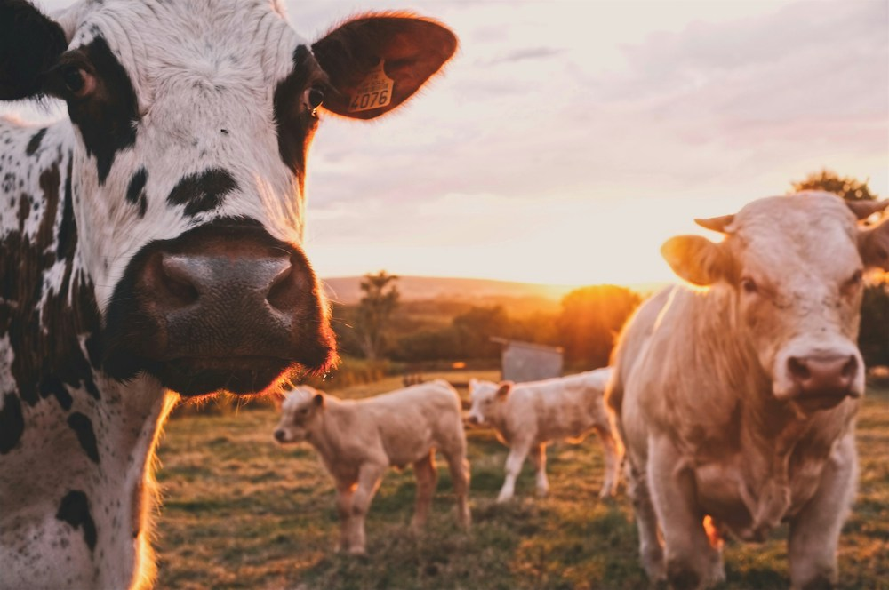
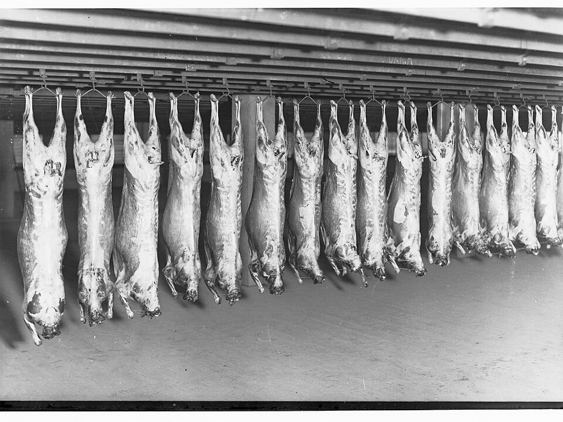
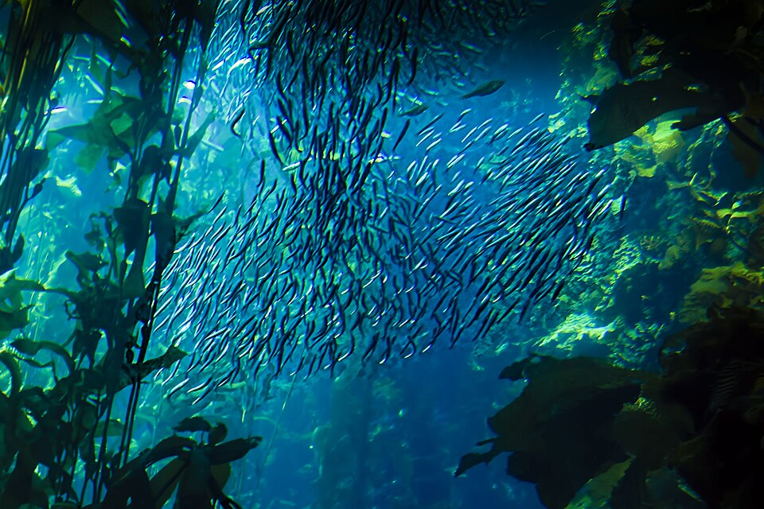
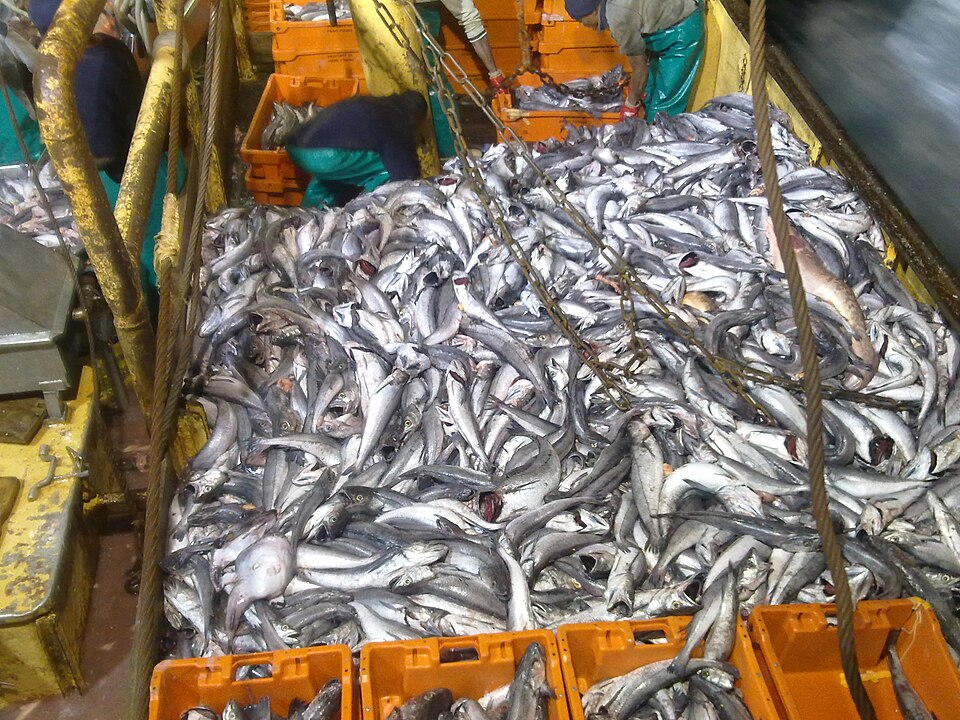
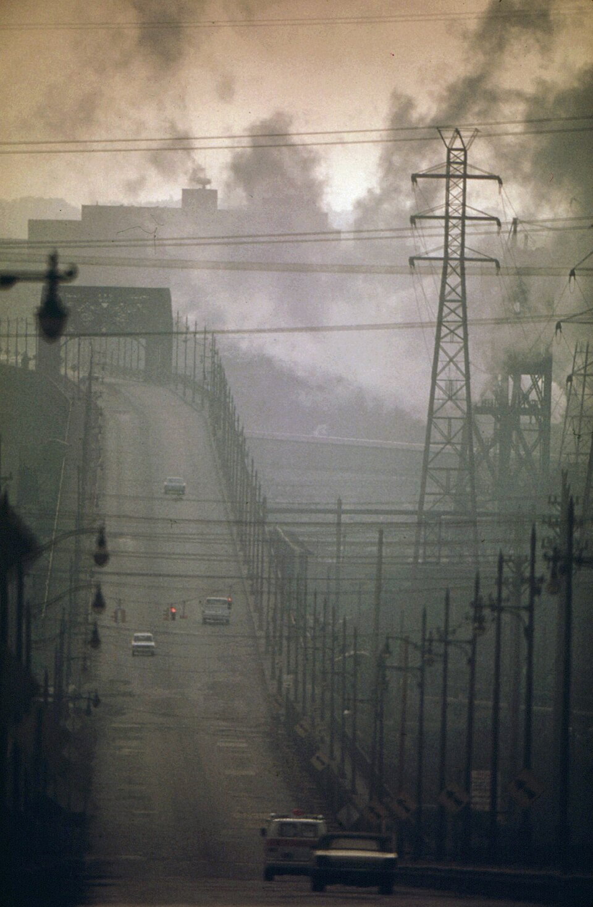
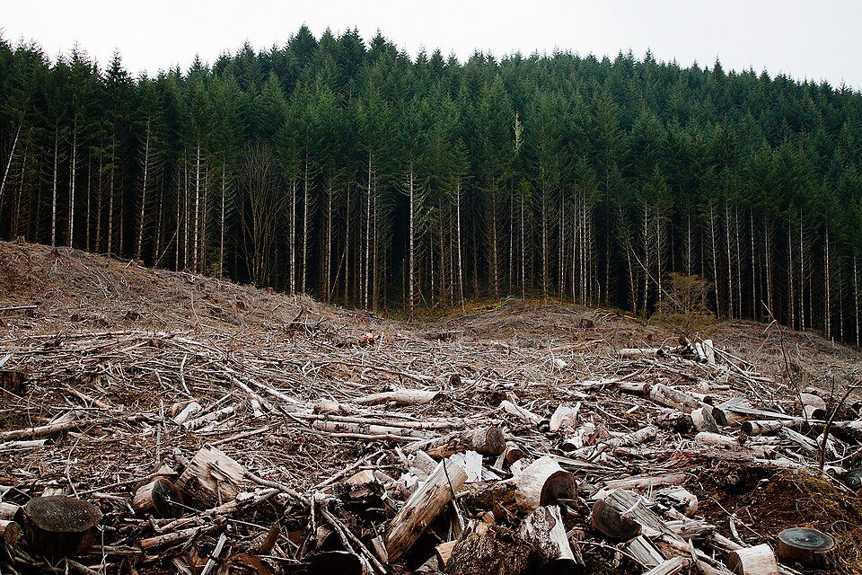
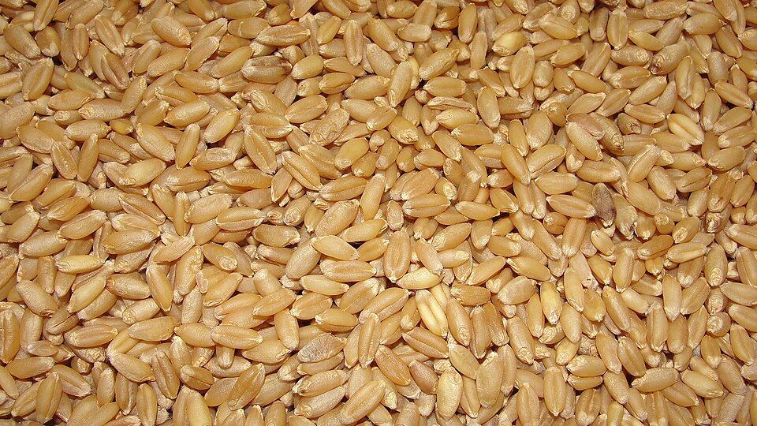
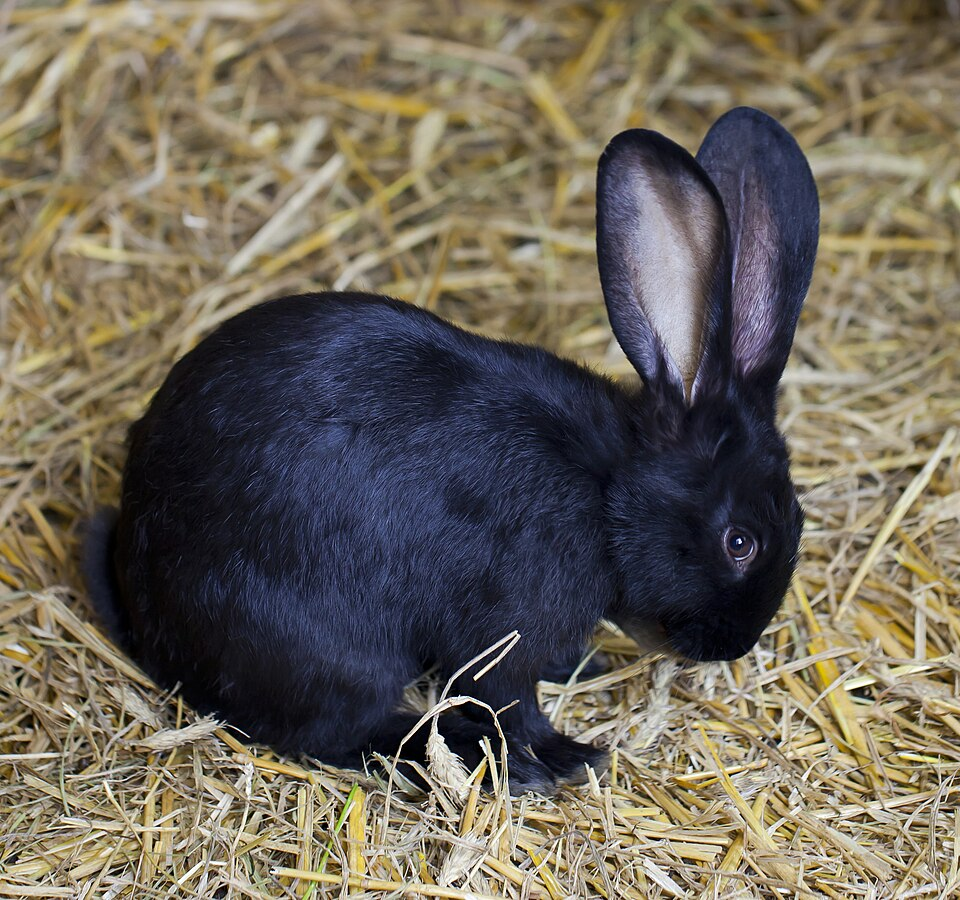
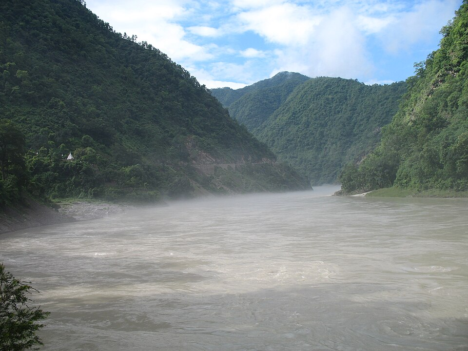

since i went.
scroll to draw your line
01 who i am
I am//. Today I amyears old.
type your age or click − / + · scroll to continue
02 the turning point
Since I went/ at the age of.
9 years on this path so far
03 up to today
liveIn the 9 years since I went vegetarian, this is what I've spared:*
204.662487
Land animals I've spared
198 chickens · 1,620 beef burgers · 1,395 pork & lamb meals
1,059.312793
Fishes & marine lives I've spared
693 finfish · 366 shellfish (+1 every 3.1 days)
14.760197
tonnes
CO₂e emissions I've prevented
+4.49 kg CO₂e saved every day
26,370.31846
m²
Forest & grazing land I've spared
2.64 hectares (+8.02 m² spared/day)
7,380.08912
kg
Animal feed I've saved
+2.25 kg of animal feed saved every day
4,230,051.084
litres
Freshwater I've saved
+1,287 L/day (+0.015 L every second)
04 the rest of my life
· hover any photo to see the other sideAcross my full life (61.4 years from age 18 to ), this is what I will spare:


+ 01 the reality
1,396
Land animals I will spare
1,351 chickens · 11,052 beef burgers · 9,517 pork & lamb meals


+ 02 the reality
7,227
Marine animals I will spare
4,728 finfish · 2,499 shellfish

+ 03 the reality
100.7
tonnes
Lifetime CO₂e I will prevent
Equal to 112 transatlantic flights

+ 04 the reality
179,902
m²
Lifetime habitat I will spare
18.0 hectares returned to nature


+ 05 the reality
50,348
kg
Lifetime animal feed I will save
50.3 tonnes of animal feed

+ 06 the reality
28.86M
litres
Lifetime freshwater I will save
11.5 Olympic swimming pools
74% of farmed land animals live in factory farms.
1,396
Land Animals I Spare
4.9 million km² of seabed is bottom-trawled every year.
7,227
Marine Lives I Spare
Vegan diets cause a quarter of the emissions of high-meat diets.
100.7 t
CO₂e I Prevent
A plant-based world would free 3.1 billion hectares of farmland.
179,902 m²
Habitat I Spare
36% of the world's crop calories go to animal feed.
50,348 kg
Animal Feed I Save
Manure and fertiliser runoff from farms creates ocean dead zones.
28.86M L
Freshwater I Save
Animals & meals spared · so far / lifetime
| Chickens & poultry | 198 / 1,351 birds (21.6k meals) |
| Beef burgers & cattle cuts | 1,620 / 11,052 burgers (2,763 lbs beef) |
| Pork chops, bacon & pigs | 1,080 / 7,368 meals (26 whole pigs) |
| Lamb & sheep cuts | 315 / 2,149 meals (14 sheep/lambs) |
| Wild & farmed finfish | 693 / 4,728 fish |
| Shellfish & crustaceans | 366 / 2,499 shellfish |
| Total animals & meat meals | 1,264 / 8,623 lives (42.2k meals) |
Carbon, land & water saved · so far / lifetime
| Greenhouse gas (CO₂e) | 14.8 t / 100.7 t |
| Forest & grazing land | 26,370 m² / 179,902 m² |
| Animal feed | 7,380 kg / 50,348 kg |
| Freshwater footprint | 4.23M L / 28.86M L |
| Annual land & CO₂e rate | 2,930 m² & 1.64 t CO₂e / yr |
| Target lifespan horizon | 79.4 years (editable) |
Sources
- 01 University of Oxford: Poore & Nemecek (2018), Science. The environmental impact of food, from 38,700 farms in 119 countries.
- 02 University of Oxford: Scarborough et al. (2023), Nature Food. The diets of 55,504 people. Used for CO₂e and land, against a typical meat eater (between the study's medium and high meat eaters).
- 03 UN FAO, via Our World in Data. How many animals are slaughtered each year.
- 04 UN FAO, via Our World in Data. Wild-caught and farmed fish.
- 05 Mekonnen & Hoekstra (2012), Ecosystems. The water footprint of farm animal products.
- 06 Alexander et al. (2016), via Our World in Data. Feed needed per kilo of meat, eggs and milk.
- 07 Office for National Statistics. UK life expectancy, 2017 to 2019.
scroll ↓